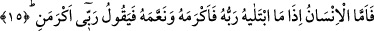
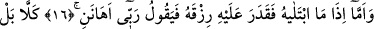
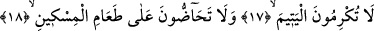
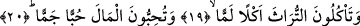
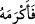

MALI AŞIRI BİÇİMDE
SEVİYORSUNUZ
15. İnsan var ya, Rabbi kendisini imtihan edip de ikramda bulunduğunda ve bol
nimet verdiğinde “Rabbim bana ikram etti” der.
16. Onu imtihan edip rızkını daralttığında ise “Rabbim beni önemsemedi” der.
17. Hayır! Doğrusu siz yetime ikram etmiyorsunuz,
18. Yoksulu yedirmeye birbirinizi teşvik etmiyorsunuz.
19. Haram helâl demeden mirası yiyorsunuz.
20. Malı aşırı biçimde seviyorsunuz.
“İnsan var ya Rabbin kendisini imtihan edip de” yâni kendisine zenginlik ve bolluk
vermek sûretiyle imtihan eden kimsenin davrandığı gibi davranıp da “ikramda
bulunduğunda” makam ve kudret vererek ikram ettiğinde “ve bol nimet verdiğinde”
işlerini kolaylaştırmak ve maîşetlerini genişletmek sûretiyle onlara nimet verdiğinde
öğünerek “Rabbim bana ikram etti” lâyık olduğum şekilde mal ve makam vererek beni
üstün tuttu “der.” Fakat bütün bunların şükür mü edecek yoksa nankörlükte mi
bulunacak diye imtihan amacıyla verilmiş olduğunu asla hatırına getirmez.
Bu âyet yukarıda geçen “Rabbin (her an) gözetlemededir.” ifâdesine bağlıdır.
Burada âdetâ şöyle denilmiştir: Allah Teâlâ kullarının hallerini gözetleme, iyi ve kötü
amellerinin karşılığını verme durumunda iken, insanoğluna gelince o bunları hiç
önemsemez. İnsanın bütün gözünü diktiği yer ve fikrini odakladığı şey dünya hayatı ve
onun lezzetleridir.
Süheylî (r.h) der ki: Âyette geçen “insan” ile Utbe b. Rebîa kasdedilmiştir. Âyette
zikredilen bu sıfat herkes için genel olsa da rivâyete göre bu âyetin inmesine sebep
Utbe’dir.
“
” fiilinin başındaki fâ harfi açıklama (tefsîriyye) içindir. Çünkü ikramda
bulunma ve nimet verme imtihanın ta kendisidir.
Âyette sanki şöyle denilmiştir: İnsanoğluna gelince o şöyle der: Rabbim beni imtihanı
esnasında nimet vererek bana ikram etti.
“İmtihan” kelimesinin önce getirilmesi, nakledilen sözün geçersiz olduğunun açığa